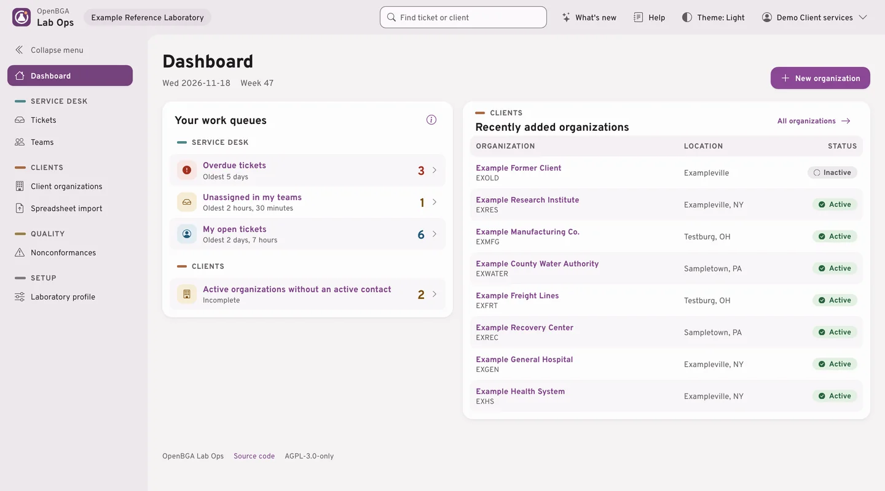
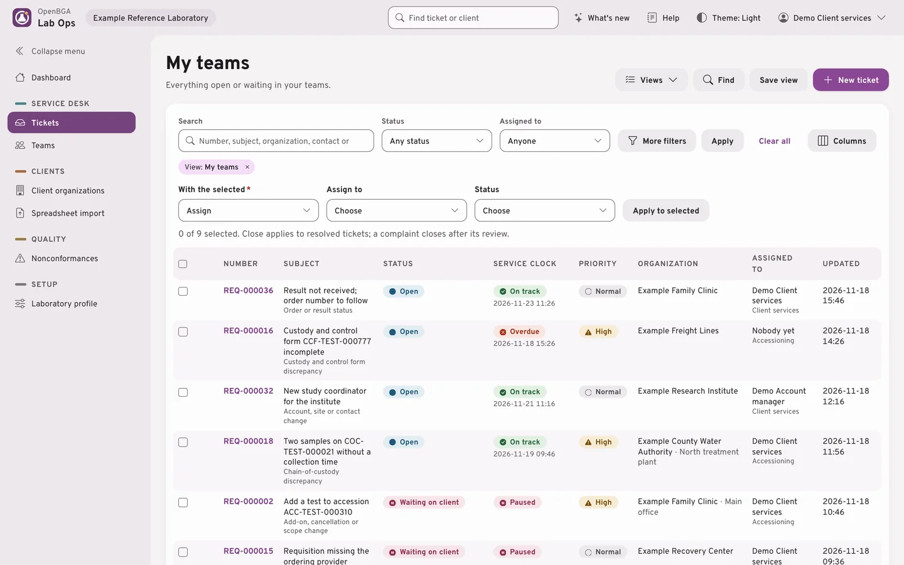
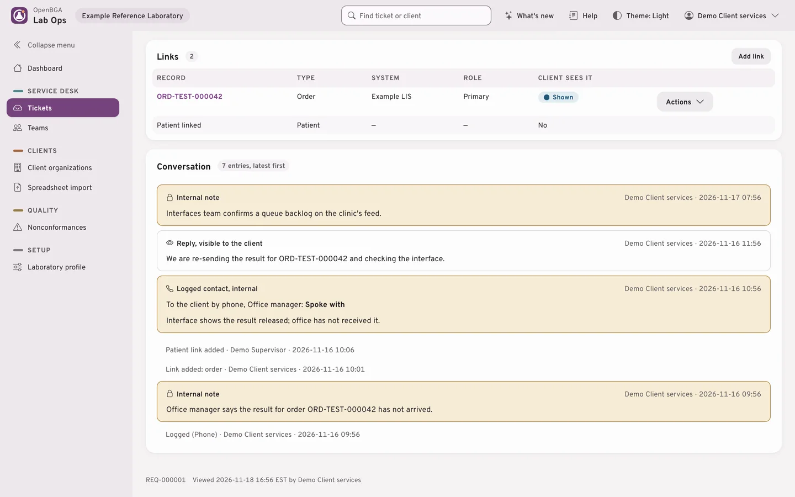
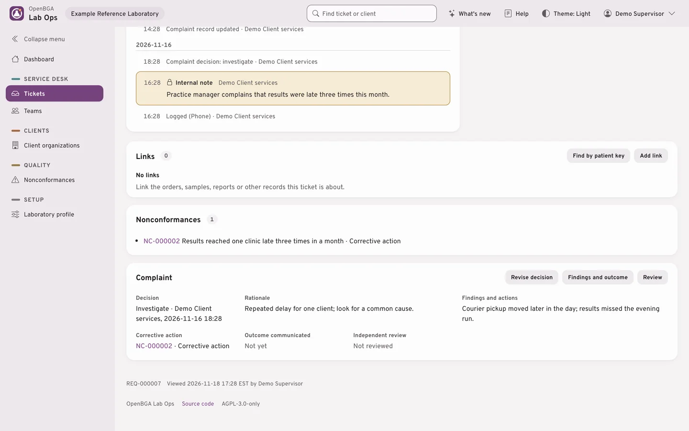
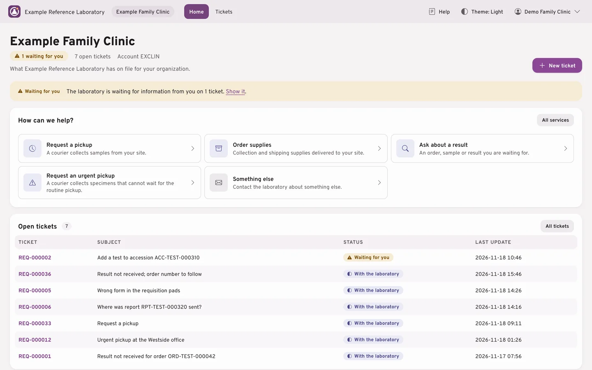
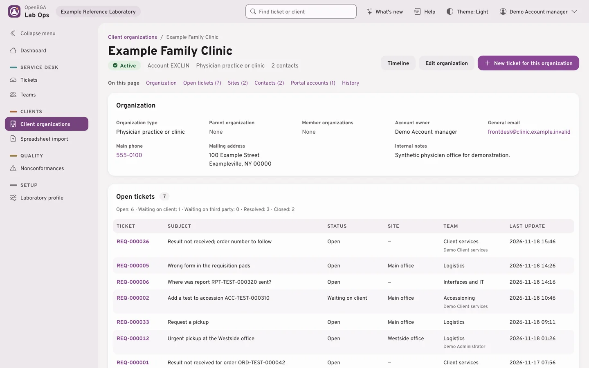

Every ticket.
In good order.
OpenBGA Lab Ops is a free, open-source client service desk for US laboratories.
Staff track questions, complaints, pickups and supply orders from intake to resolution. Clients open tickets, reply to their laboratory and follow the work in their own portal.
AGPL-3.0-only · Free to use

From the first call
to closure.
One ticket carries the whole exchange: who asked, who answered, what was decided and when.
Receive
A call, email, fax, visit or portal request becomes a ticket with a permanent number.
Route
The category proposes a team and a priority. Staff take a ticket or assign it to a teammate.
Answer
Reply to the client, keep an internal note or log a call. Service clocks follow the laboratory's business hours.
Resolve
Record a resolution, then close. A complaint closes only after an independent supervisor's review.
A history that stays
as it happened.
A laboratory's service desk holds sensitive conversations. OpenBGA Lab Ops checks access on the server and keeps each ticket's history as it was recorded.
- Nothing is overwritten
- Entries keep their original text. A correction adds a record with its reason, and every change carries who made it and when.
- Clients see their own
- A portal account reads the tickets of its organization or of its listed sites. Internal notes and logged calls stay with staff.
- Patient information behind a grant
- Person-level links are masked and marked form answers are protected. Staff need an explicit grant, and each reveal is audited.
- Independent complaint review
- A complaint closes after review by a supervisor who never held the ticket and never recorded its investigation decision.
- Clocks on your calendar
- First-response and resolution targets run on the laboratory's business hours and holidays. The resolution clock pauses while the laboratory waits on the client.
- References, not results
- A ticket links to an order, sample, report or invoice in your systems. Testing, result reporting and billing stay where they are.
A closer look.
Five moments from the demo laboratory that ships with the project: a team queue, a conversation, a complaint, the client portal and a client's record.
Service desk
One queue for the whole desk.
Tickets from calls, email, fax, visits and the portal arrive in team queues. Filter by status, assignee, organization or service clock, save the view, and assign several tickets at once.

Conversation
Reply, note or log a call.
A reply is visible to the client. A note and a logged contact stay internal, and the composer says who will see a message before it is sent. Links tie the ticket to the order, sample or report it is about.

Complaints
A decision, then a second look.
Mark a ticket as a complaint and record whether to investigate and why, then the findings, the actions and what the client was told. With the optional quality module, the complaint opens a nonconformance for its corrective action. Closing waits for an independent supervisor's review.

Client portal
Clients ask once and follow along.
From a phone or a desktop, clients request a pickup, order supplies or ask about a result on the forms your laboratory offers. They see what the laboratory is working on and what is waiting for them.

Client records
Know who is calling.
Each organization brings together its sites, contacts, portal accounts, open tickets and identifiers in your other systems. Import a directory from CSV files and check the preview before anything is saved.

What the release
covers.
One deployment serves one laboratory and its client organizations, with a desk for staff and a portal for clients. The roadmap lists what follows.
| Area | What you can do |
|---|---|
| Client records | Manage organizations, sites, contacts and portal access. Preview CSV imports and see each client's ticket history. |
| Service desk | Route tickets to teams and staff. Record calls, send client-visible replies, attach files and keep internal notes. Filter work queues, save views and review complaints. |
| Service requests | Offer pickup, supply order and other forms through the portal. Configure required fields and orderable items. |
| Targets and references | Measure first response and resolution on the laboratory's business calendar. Link tickets to orders, samples and reports in existing systems. |
| Quality records | Optionally record nonconformances with containment, impact on reported results, root cause, actions, an effectiveness check and independent closing. Open one from a complaint. |
| Administration | Set up roles, account permissions, announcements and the laboratory's contact details. Review attributed changes in the audit history. |
| Everyday use | Sign in with an optional authenticator app. Read the help on every page, on a phone or a desktop, in light or dark. |
Free to use.
Open to change.
OpenBGA Lab Ops is licensed under the GNU Affero General Public License, version 3 only. There is no licence fee.
Use it
Run it for your laboratory on your own servers or with a host you choose. The licence sets no limit on users, sites or tickets.
Change it
Read the source, adapt it to your procedures and send improvements back as pull requests.
Share alike
If people use a version you modified over a network, the licence asks you to offer them its source. A setting points the application's footer link at it.
Community
The software is provided as is, without a support commitment. Issues and pull requests are welcome and are answered on a best-effort basis.
Are you looking for support?
BGASoft, the laboratory software company behind OpenBGA, offers paid support and services to organizations that run this software.
Contact bgasoft.com.
Try it in
a few minutes.
The public demo has example records for a reference laboratory. Its sign-in page lists shared accounts and a password, and it resets daily.
To run it on your own machine with Docker Compose, use the commands here. The trial listens only on your machine and is meant for evaluation. Use synthetic data in both.
git clone https://github.com/openbga/lab-ops.git
cd lab-ops
docker compose --profile app up --build --wait
# Type a password of at least 12 characters and press Enter.
read -rs DEMO_PASSWORD
export DEMO_PASSWORD
docker compose --profile app exec -e DEMO_PASSWORD web \
python manage.py seed_demo
unset DEMO_PASSWORDThen open http://127.0.0.1:8000 and sign in as demo_client_services, demo_supervisor, demo_client or another demo account with the password you chose.
Meet the project.
OpenBGA Lab Ops is maintained in openbga/lab-ops. It uses Django and PostgreSQL, with a browser-based desk for laboratory staff and a portal for clients. It is part of OpenBGA, the open-source projects of BGASoft.
The software records what people did and when. It does not make a laboratory compliant, accredited or certified. The laboratory that deploys it sets its own policies, service targets and retention.
See the roadmap What's new Read the documentation Contribute Report a vulnerability